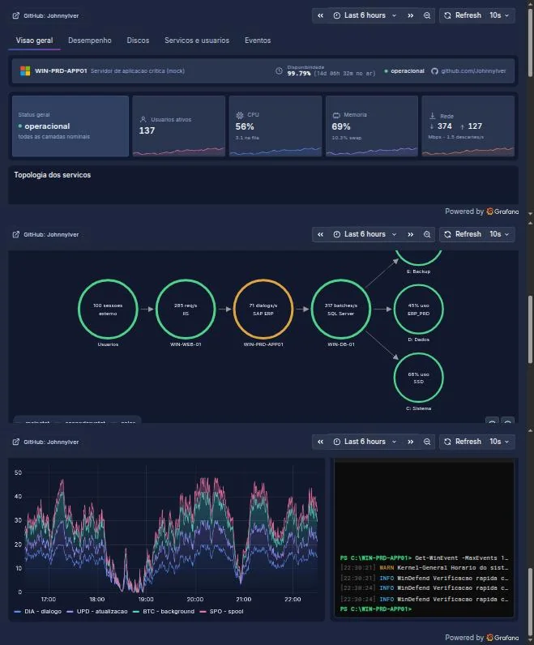

Visão geral
Topologia e saúde do servidor
KPIs de CPU, memória, rede e usuários ativos, topologia animada das camadas (usuários → IIS → SAP ERP → SQL Server → volumes) e um terminal PowerShell simulando logs em tempo real.
Node Graph
HTML Graphics
TestData